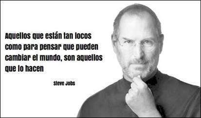

LA CALIDAD ES MAS IMPORTANTE QUE LA CANTIDAD. UN HOME RUN ES MEJOR QUE DOS DOBLES.

Fechas Relevantes
1976: Steve Jobs y Steve Wozniak lanzan la primera computadora Apple en Palo Alto, California. Consiste en poco mas que un panel de circuitos y cuesta poco menos de 700 dolares.
1977: La Apple II con procesador de un megahertz se convierte en la primera computadora construida en forma masiva y en un exito instantaneo.
1980: Apple pasa a cotizar en Bolsa.
1983: Presentan "Lisa", la primera computadora personal con un mouse para navegar y con iconos y carpetas en el "escritorio". Su fracaso fue atribuido a su alto precio, de casi 10.000 dolares.
1984: Debut de la computadora Macintosh. Es accesible e incluye innovaciones como la disquetera, un monitor integrado y mouse..
1985: Jobs renuncia por primera vez tras perder el control de Apple en una lucha interna por el poder.
1986: El director ejecutivo de Apple, John Sculley, se convierte en el presidente de la empresa. Jobs comienza con the company NeXT Computer y compra la unidad de graficos de Lucasfilm, a la que rebautiza como Pixar.
1996: Apple compra NeXT y convierte a Jobs en asesor.
1997: Jobs reemplaza a Gil Amelio al frente de Apple. El archirrival Microsoft invierte 150 millones de dolares
1998: Jobs moderniza la linea de productos de Apple, produciendo las coloridas computadoras iMac por 1.300 dolares.
1999: Se presenta en el mercado el iBook, que llega como un iMac movil.
2001: Apple lanza un reproductor de musica digital MP3, el iPod, por 399 dolares y abre la primera MacStore en Palo Alto.
2003: Apple abre la tienda de musica online iTunes.
2004: Jobs es sometido a una operacion por un cancer de pancreas.
2007: Apple lanza el iPhone, inaugurando la era de las pantallas tactiles.
2009: Jobs se toma una nueva licencia medica en enero y regresa al trabajo en junio tras un trasplante de higado.
2010: Jobs presenta el iPad en enero y esta tableta con pantalla tactil sale a la venta en abril, convirtiendose en un gran exito. En mayo, Apple supera a Microsoft como primera empresa de tecnologia estadounidense en terminos de valor de mercado.
2011: 17 de enero: Jobs se toma una nueva licencia medica sin especificar los motivos.
18 de enero: Apple reporta un beneficio neto trimestral record de 6.000 millones de dolares sobre unos ingresos de 26.740 millones.
2 de marzo: Jobs hace una aparicion sorpresa para develar la ultima iPad.
6 de junio: Jobs vuelve a sorprender al lanzar el servicio gratuito de almacenamiento en linea iCloud.
19 de julio: Apple logra en el segundo trimestre 7.310 millones de dolares de beneficios, con unos ingresos de 28.570 millones.
9 de agosto: Apple se convierte por un corto tiempo en la empresa mas valiosa del mundo en capitalizacionn de mercado al superar a ExxonMobil.
24 de agosto: Jobs anuncia su renuncia como presidente ejecutivo de Apple y es sustituido por el director de ventas y operaciones, Tim Cook, pero permanece como presidente del directorio. Tras el anuncio, las acciones de Apple caen 5,3%.
4 de octubre: Apple presenta el "iPhone 4S", un iPhone mas potente con una funcion "asistente personal" que responde a comandos de voz, con un procesador mas rapido y una camara de video de alta definicion.
5 de octubre: Muere Steve Jobs.
Es algo complicado, es dificil crear productos centrandose en el publico objetivo. Muchas veces, la gente no sabe lo que quiere hasta que se lo enseñas.